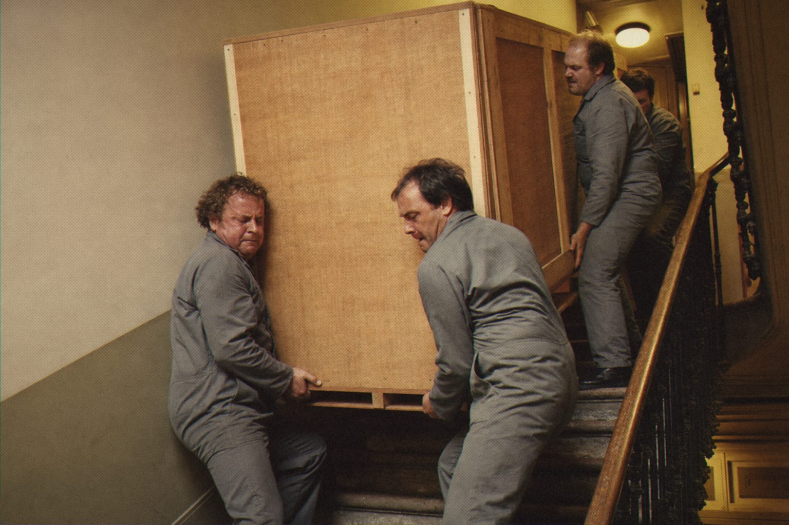

It took four men to carry it upstairs. Now it takes one click.
In 1977 Yamaha built a synthesizer that weighed as much as a small piano and sounded like the sky opening. Studios that owned one kept it forever. Studios that didn't just kept hoping.
Tyrell80 is that instrument, rebuilt from its circuits. It was modelled chip by chip from the original service manual, with each stage of the voice following the engineers' own drawings.
The brass swells as it should, the aftertouch breathes, and the strings hang in the air a little longer than you expect. The model and the schematics notes are open on GitHub.

Two voice channels, ring modulator and the ribbon.
Tyrell80
Polyphonic synthesizer after the Yamaha CS-80.
Open source · AU · VST3 · CLAP
Jardim SonoroOpen-source audio research
Download: jardimsonoro.com/audioSource & issues: github.com/nagualcode/tyrell80
Synthesizers01